GRIFOLS ONLY - LWOTF, Existing Waste Drawer Upgrade
This procedure will install the following hardware:
Parts and Materials Required
- Panther Tool Kit
- Sharpie
- Wire/Cable Cutter
- Tubing Cutter
- Continuous Access Parts Kit
- Vacuum Grease
Procedure
 Connect the CAN Cable
Connect the CAN Cable
- Prep the Waste Drawer
- Tubing and Cable Installation and Routing
- Remove the Waste Bottle Coupling Block with a 4 mm Allen key.

Note—Save screws and washers for reassembly. - Cut the two pieces of vacuum tubing just below the Waste Bottle Coupling Block fittings with a tubing cutter. Discard the Coupling Block.
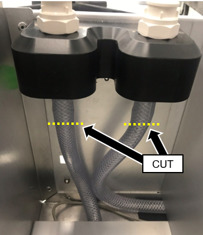
- Label the vacuum flow return tubing in the Solid Waste Bag area as shown.
Note—Label the tubing that is routed to the filter.
This vacuum line will be used to connect the new vacuum filter.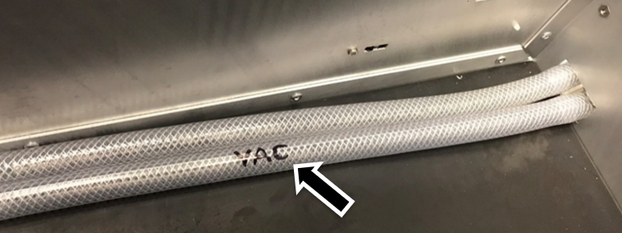
- Remove and dispose of the vacuum filter.
- Place enough blue pads to cover the floor below the Waste Drawer.
- Remove the Waste Drawer from each of the drawer rails. Pull the drawer up to free it from the forward two tabs and slide the drawer rail back to free if from the rear tab.
Note—To assist in lifting the front of the drawer off the front tab, insert a flat blade screwdriver below the lower edge of the tab and twist while pulling up on the drawer as shown below. - Turn the Waste Drawer on its right side to access the bottom of the drawer.
- Remove the Coalescing Trap Use a Phillips screwdriver to remove the three screws securing the coalescing trap to the bottom of the drawer.
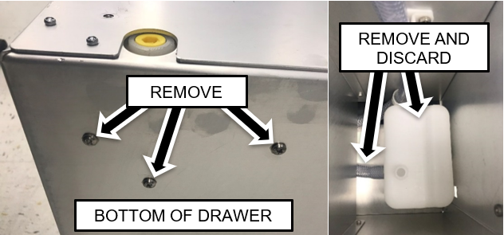
- Remove and discard the coalescing trap along with the connected tubing.
- Cut the vacuum line tubing near the dividing wall, as shown below.
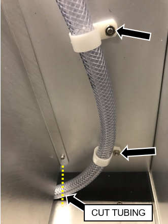
- Remove the nuts securing the tubing clamps that hold the vacuum line to the filter area in the front of the waste drawer.
Note—Dispose of the clamps and tubing but retain the nuts. - Cut the cable for the waste bottle full and empty float sensors near where it exits the drawer with a wire cutter.

Caution—DO NOT damage the tubing. - Remove and retain the four screws securing the empty and full sensors to the front of the drawer.
Remove and discard the sensors along with the cut cable.
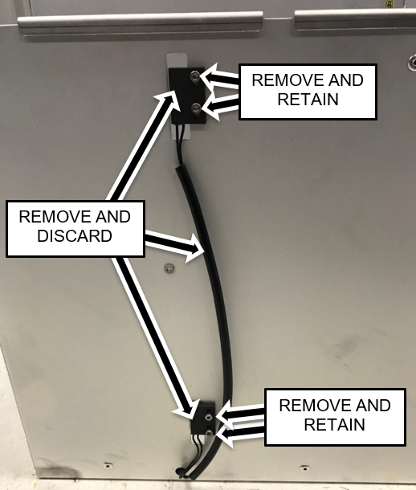
- Remove and retain one of the screws securing the lower tubing clamp to the standoffs on the back of the drawer. Loosen the other screw and move the clamp aside.
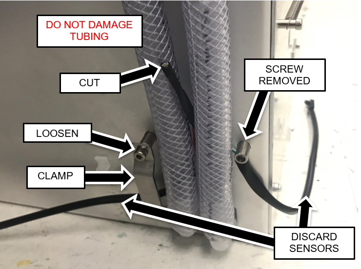
- Remove the two waste bag presence sensors from their mounting plates.
Push the snap features from the inside of the drawer using a small Allen key if necessary.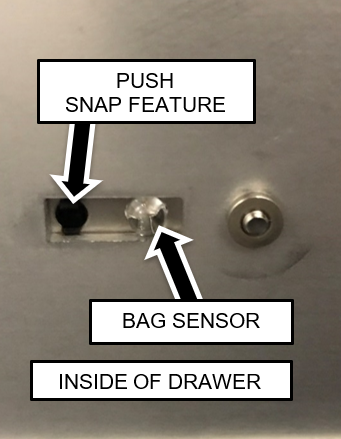
- Unclip the cables from the harness clamps on the sides and back of the drawer.
Note—Do not remove the cable clamps from the sides of the drawer. - Cut the two sensor cables (Waste Bag Presence and Waste Bottle Full/Empty) near their cable clamp as shown below. The sensor cables are located behind the vacuum housing in the rear of the lower chassis.
Caution—Be careful not to damage the vacuum tubing. - Disconnect the waste bag and bottle sensors from the Cooling Module PCB.
Pull cables from behind Vacuum and Cooling Module.
Note—For easier access open the Universal Fluids Drawer, unlatch the Vacuum Module and slide it forward to allow the cables to be pulled free. - Route the new CAN cable.
- Remove and retain one of the screws securing the upper tubing clamp.
- Loosen the other screw and move the clamp aside.
Caution—Be careful to maintain the original positions of the tubing. - Remove the remaining section of sensor cables.
- Route the new CAN cable behind and between the tubing and reattach the tubing clamp.
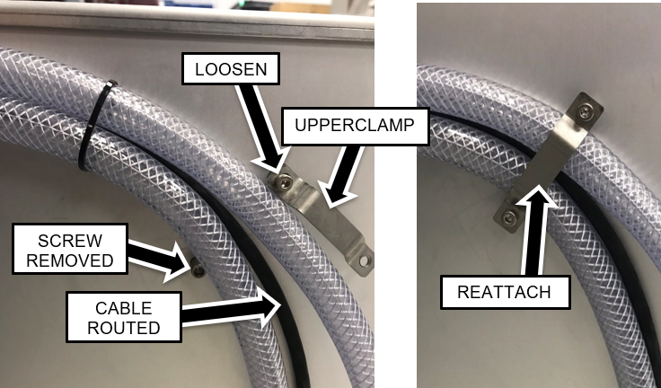
- Pull the waste line tubing (from the Waste Bottle Block) completely out of the drawer.
Leave the vacuum tubing in the drawer.
Note—The lower cable clamp should still be moved aside from a previous step. 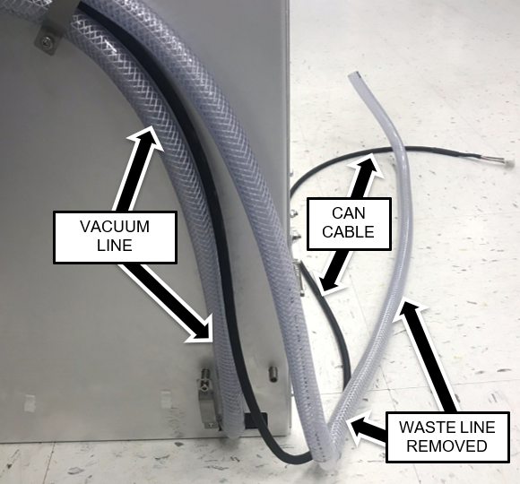
- Install the new Waste Bottle Sensor Cable.
The short branch routes to the left side of the drawer and the long branch is on the right side (as you face the system).
Note—The sensor modules have snap features that press into a hole in the sensor mounting plates. One side of the mounting plate will have a slightly more rounded edge than the other. The snap is pressed in from the side with the more rounded edge. - Route the branches of the cables behind the drawer and position the cable behind the vacuum tubing as shown.
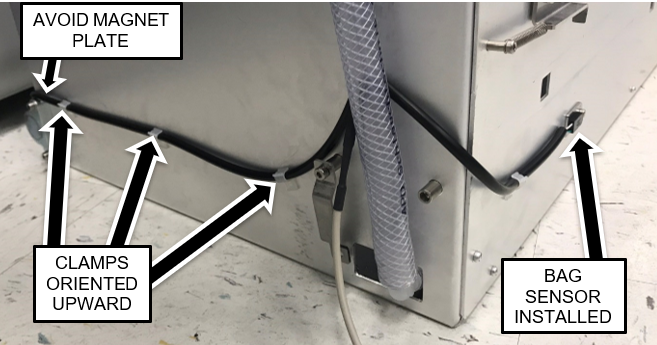
- Secure the cable to the sides of the drawer with the cable clamps oriented upward as shown above.
Route the right-side of the branch such that it will not interfere with the magnet interface block as shown above. - Route the CAN cable through the opening in the drawer to the right of the vacuum tubing.
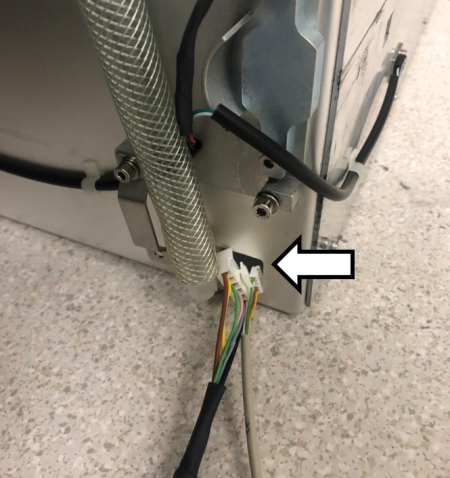
- Route the Waste Bag Sensor Cable through the same opening.
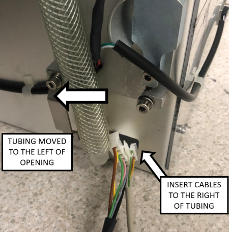
- Pull up the cable slack such that the main branch of the cable enters through the opening. This will ensure that the outer jacket protects the cable at the edge of the opening.
- Insert the Waste Line tubing back into the drawer biased to the right side (when viewed from the rear).
The Vacuum line should be on the left and Waste line on the right (when viewed from the rear). - Re-attach the metal tubing clamp.
- Inside the Waste Drawer, crisscross the vacuum tubing over the waste tubing as shown in the image below.
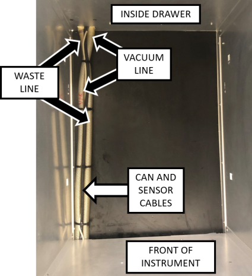
- Position the tubing inside the drawer so that the ends are in the front left compartment of the Waste Drawer.
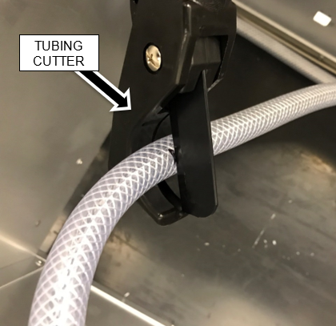
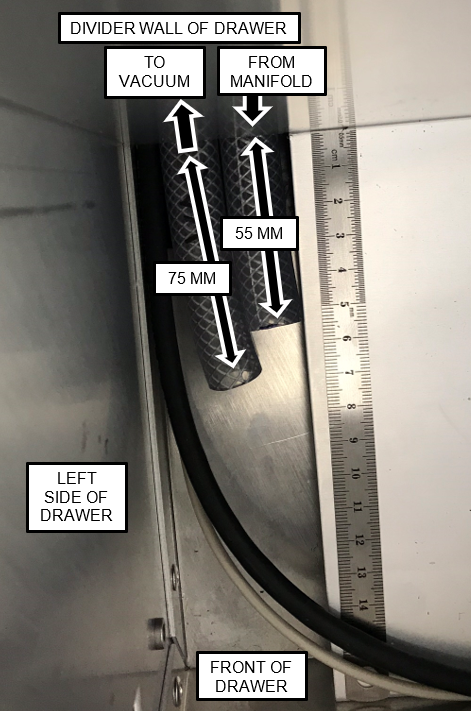
- Prepare the Bottle Full and Empty Sensor Assembly to be installed by bending the wires at the connector as shown.
- Insert ONE CONNECTOR AT A TIME into the hole in the front of the Waste Drawer.
Note—The connectors must be oriented sideways to insert them into the hole. Do NOT insert the cable fully until the second connector is inserted. - Route the Full/Empty Sensors to the front left corner of the Waste Drawer as shown.
Straighten the sensor wires that were bent in the previous step.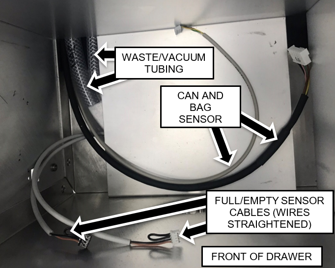
- Attach the Full and Empty Sensors to the front of the Waste Drawer.
Use the screws removed from the original sensors. The sensor with the longer cable is the upper (Full) sensor.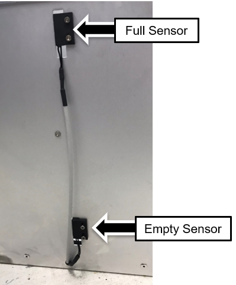
- Installing Tubing and Cables for Filter and Permanent Waste Bottle
- Installing the Permanent Waste Bottle and GAC Filter
- Slide the Vacuum Bottle into position while positioning the tubing and cables as shown.
- Apply vacuum grease to both the large barbed fittings on the outside of the fixed/permanent vacuum bottle.
- Install the Vacuum Bottle Riser and Waste Bottle Line Riser onto their respective fittings.
Use a pair of vice grips to hold the tubing near the fittings while pulling up on the tubing.
There should be no more than a 3mm gap between the tubing and flange.
Be Patient! Be Diligent!Caution—To avoid breaking the fittings, support the right-angle fittings from the opposite side with one hand while pulling the tubing onto the fittings. Note—On some installs the Interface tubing going to the permanent waste bottle may need to be trimmed. - Apply vacuum grease to the outside surface of the one small and one medium sized barbed fittings on the Vacuum Bottle.
- Install the 1/4" flexible tubing on the medium sized barbed fitting and the 1/8" flexible tubing onto the small sized barbed fitting.
Note—The 1/4" flexible tubing should form a u-bend above the "tower" of the vacuum bottle as shown but not above the top of the drawer. The tubing lengths can be adjusted by pulling the tubing from left side of the drawer or vice versa. - Align the key features and connect the right-angle connector of the Float Sensor to the Float Assembly connector.
- Orient the connector as shown below, and pull any excess cable from the other side of the drawer.
- Cut off and discard the dust float assembly dust cap.
- Apply vacuum grease to the O-rings on each end of the GAC vacuum filter.
- Install the Odorcarb Vacuum Filter with the Flow Arrow pointing UP into the Filter Block as shown below.
Note—The protrusion on the filter should be oriented to the right.
The retainer bracket will be above the top surface of the filter when the filter is fully seated. - Connect the Quick-connect on the Vacuum Interface tubing to the top of the Vacuum Filter.
- Installing the Bellows Pump and Removable Waste Bottle Coupling Block
- Finish Installation
- Continue to Universal Fluids on the Fly Module Installation


 button at the top of the page to send feedback, comments, or change requests.
button at the top of the page to send feedback, comments, or change requests.{kind=link}
{kind=link}
{kind=link}